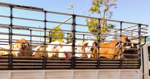

MAI 2024
Brasil bate recorde de exportação de carne bovina
Volume exportado no primeiro semestre supera em 12% o mesmo período do ano anterior.
Leia maisResponsável por 25% do PIB nacional e quase 50% das exportações, o agronegócio é o motor do desenvolvimento do Brasil.
Saiba MaisO agronegócio (ou agroindustrial) é a cadeia produtiva que envolve todas as atividades relacionadas à produção e comercialização de produtos agrícolas, desde os insumos até o consumidor final.
O agronegócio brasileiro teve seu marco inicial na década de 1970 com a modernização da agricultura. A partir dos anos 2000, o Brasil se consolidou como potência agrícola mundial, graças aos avanços tecnológicos e à expansão da fronteira agrícola.

O Brasil é um dos maiores players globais no agronegócio, com participação estratégica na segurança alimentar mundial.
do PIB nacional
das exportações
da força de trabalho
em vários produtos agrícolas
Além de ser líder em várias commodities, o Brasil é:
Conheça os produtos que colocam o Brasil no topo do agronegócio mundial

O Brasil é o maior produtor e exportador mundial de soja, com produção recorde a cada safra.
Maior produtor e exportador mundial há mais de 150 anos, com cafés de qualidade reconhecida.
Maior exportador mundial, com rebanho de mais de 200 milhões de cabeças.
Apesar do sucesso, o agronegócio brasileiro enfrenta diversos desafios para manter sua competitividade.
Estradas, portos e ferrovias precárias aumentam os custos e reduzem a competitividade.
Pressão internacional por práticas mais sustentáveis e rastreabilidade da produção.
Aumento nos preços de insumos como fertilizantes e defensivos agrícolas.
O setor tem investido pesado em tecnologia e parcerias para superar esses obstáculos:
Tecnologia e Inovação
Parcerias Internacionais
Sustentabilidade
Capacitação
O agronegócio está em constante evolução com novas tecnologias e práticas.
Uso de drones, IoT, big data e inteligência artificial para aumentar produtividade.
crescimento em 5 anos
Desenvolvimento de sementes mais resistentes e adaptadas às mudanças climáticas.
investimentos desde 2020
Reaproveitamento de resíduos e subprodutos da produção agrícola.
de empresas adotando
Segundo projeções do Ministério da Agricultura, o agronegócio brasileiro deve:
Tem dúvidas sobre o agronegócio brasileiro? Entre em contato conosco.
Av. Duque de Caxias, 240 - Garça/SP
(14) 99879-5043
contato@agrotechbr.com.br
Seg-Sex: 8h às 18h
Fique por dentro das principais novidades do agronegócio brasileiro.
Volume exportado no primeiro semestre supera em 12% o mesmo período do ano anterior.
Leia maisFazendas experimentais alcançam 30% mais produtividade com agricultura de precisão.
Leia maisNovas linhas de crédito e assistência técnica para pequenos produtores.
Leia maisQuer receber as notícias mais recentes diretamente no seu e-mail?
Assine nossa newsletter